18 Proxmox CLI¶
18.1 Doelstellingen¶
Na dit hoofdstuk beheerst de student het volgende:
-
de belangrijkste opdrachten van qm en pct gebruiken;
-
een virtuele machine volledig vanaf de commandoregel aanmaken, instellen en starten;
-
een container vanaf de commandoregel aanmaken;
-
snapshots nemen, terugzetten en verwijderen, en machines klonen en omzetten naar een template met qm en pct;
-
de netwerkconfiguratie van Proxmox veiligstellen en terugzetten;
-
een NAT-bridge aanmaken en uitleggen wanneer je die nodig hebt;
-
uitleggen wat bonding doet en een bond instellen;
-
een bestaande virtuele machine uit VMware importeren met qm importdisk of qm importovf.
18.2 Inleiding¶
Nu we de basis van Proxmox onder de knie hebben zullen we bestuderen hoe we via de CLI VM’s, containers en netwerken kunnen aanmaken. We gaan ook een stapje verder dan hetgeen we tot nu toe gezien hebben.
De belangrijkste tools zijn:
-
qm: beheer van QEMU-machines (VM’s)
-
pct: beheer van containers (LXC)
18.3 Installatie VM¶
We maken een virtuele machine volledig vanaf de commandoregel. Er zijn twee routes:
-
Kon je nested virtualization instellen, dan kan Proxmox KVM gebruiken. Installeer dan AlmaLinux 10, een RHEL 10-variant.
-
Lukt nested virtualization niet, installeer dan Debian 13. Zonder KVM bootst QEMU de processor in software na. Debian is licht genoeg om dat in een aanvaardbare tijd te doen; een RHEL 10-installer duurt dan veel langer.
Kijk op pve of KVM werkt:
root@pve:~# ls /dev/kvm
/dev/kvm
Zie je /dev/kvm, kies dan AlmaLinux. Krijg je No such file or directory, kies dan Debian. De Debian-VM krijgt ID 110, de AlmaLinux-VM ID 111.
Eerst zoeken we waar Proxmox de ISO's bewaart. Dat geldt voor beide routes.
root@pve:~# pvesm status
Name Type Status Total (KiB) …
local dir active 62381820 …
local-lvm lvmthin active 121516032 …
Hieruit kunnen we volgende afleiden:
-
local (dir): directory storage, geschikt voor ISO’s
-
local-lvm (lvmthin): block storage, kan géén ISO’s opslaan
Je kan checken waar de locatie van local zich bevindt.
root@pve:~# grep -A2 "^dir: local$" /etc/pve/storage.cfg
dir: local
path /var/lib/vz
content iso,vztmpl,import,backup
We zoeken verder…
root@pve:~# find /var/lib/vz -name iso
/var/lib/vz/template/iso
De standaarddirectory voor ISO’s is dus /var/lib/vz/template/iso/.
18.3.1 Zonder nested virtualization: Debian 13¶
We maken een VM met Debian aan met volgende instellingen:
-
VM ID: 110
-
Naam: DebianLinux
-
RAM: 1024 MB
-
Cores: 2
-
Disk: 15 GB
-
ISO: Debian 13 netinst
-
Storage: local-lvm
-
Bridge: vmbr0
We gaan naar deze directory om de ISO daar te downloaden.
root@pve:~# cd /var/lib/vz/template/iso/
De locatie waar je Debian Linux kan downloaden is uiteraard https://www.debian.org/.
Klik op Andere downloads.
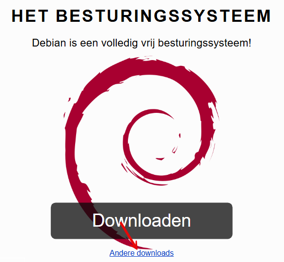
We kopiëren het linkadres van 64-bits pc netinst iso.
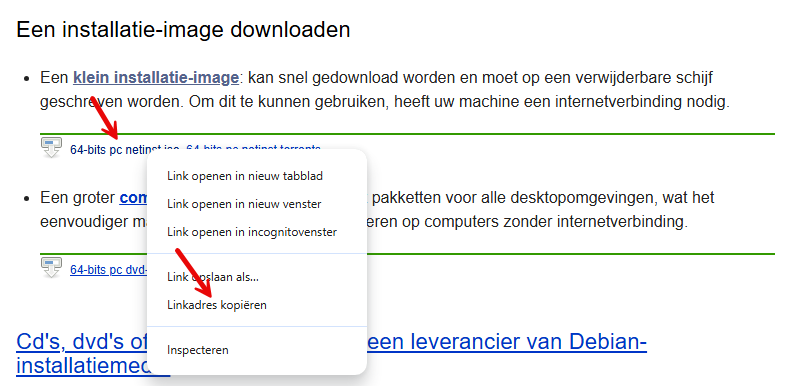
Gebruik deze link om de ISO te downloaden.
root@pve:/var/lib/vz/template/iso# wget
…
Ga terug naar je homedirectory. Dat is niet nodig, maar dan wordt de prompt weer korter .
root@pve:/var/lib/vz/template/iso# cd
We maken nu een nieuwe VM aan door gebruik te maken van het commando qm.
root@pve:~# qm create 110 --name debianLinux --memory 1024 --cores 2 --net0 virtio,bridge=vmbr0
We voegen nu een virtuele SCSI-schijf van 15 GB toe aan deze VM.
root@pve:~# qm set 110 --scsihw virtio-scsi-pci --scsi0 local-lvm:15
…
We koppelen de ISO aan deze VM
root@pve:~# qm set 110 --cdrom local:iso/debian-13.7.0-amd64-netinst.iso
We zorgen ervoor dat we opstarten van de ISO.
root@pve:~# qm set 110 --boot order=ide2
PS Ide0 en 1 worden gebruikt voor de eerste en tweede harde schijf. Ide2 wordt gebruikt voor voor de ISO.
Aangezien Debian Linux UEFI ondersteunt zullen we UEFI instellen.
- Eerst stellen we BIOS-type of UEFI in.
root@pve:~# qm set 110 --bios ovmf
update VM 110: -bios ovmf
Ovmf is Open Virtual Machine Firmware.
- Met onderstaande maak je een EFI-disk aan. Dat is een kleine virtuele disk die gebruikt wordt door het UEFI-firmware systeem. Zonder deze disk kan je niet opstarten.
root@pve:~# qm set 110 --efidisk0 local-lvm:1
…
We zetten KVM uit als we geen nested virtualization hebben.
root@pve:~# qm set 110 --kvm 0
update VM 110: -kvm 0
We vragen de VM’s op.
root@pve:~# qm list
VMID NAME STATUS MEM(MB) BOOTDISK(GB) PID
110 DebianLinux stopped 1024 0.00 0
Er staat geen grootte bij bootdisk (GB) omdat je nu opstart van CD-ROM.
Uiteraard is DebianLinux nu zichtbaar in de GUI.
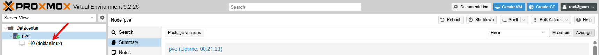
We starten de VM op.
root@pve:~# qm start 110
Ga naar de console via de GUI. Je krijgt nu onderstaand scherm. Kies voor Install (niet grafische installatie).
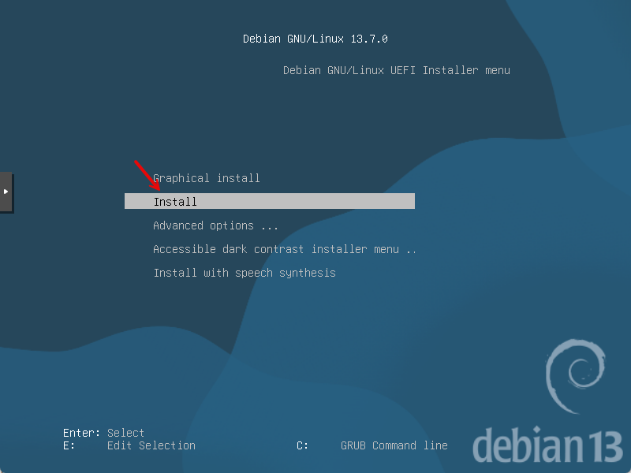
Je zal de tab-toets moeten gebruiken omdat de muis niet werkt.
Gebruik onderstaande instellingen in de schermen die erna volgen:
-
Kies nu de taal Dutch - Nederlands.
-
Kies nu voor België.
-
Kies je toetsenbordindeling, voor de meeste studenten Belgisch.
-
Debian laadt nu aanvullende installatiemodules, herkent hardware, stelt netwerk in enz.
-
Wij laten Debian staan voor de computernaam.
-
In het venster van het domein typ je lan in.
-
Kies erna het wachtwoord voor de root. We kiezen voor 123.
-
Geef het wachtwoord moet je erna bevestigen.
-
Maak erna een gebruiker student aan.
-
We kiezen als volledige naam student.
-
De gebruikersnaam is student.
-
-
Stel het wachtwoord voor de gebruiker student in. Kies weer voor 123.
-
Ter controle geef je het wachtwoord voor student nogmaals in.
-
Bij schijfindeling kies je voor: Begeleid - benut gehele schijf.
-
Je krijgt nog de melding dat alle gegevens van de schijf gewist zullen worden. Bevestig dit.
-
Erna kan je instellen hoe de schijf wordt ingedeeld. Kies voor Alles in één partitie (aanbevolen voor nieuwe gebruikers).
-
Erna kies je voor “Schijfindeling afsluiten & veranderingen naar schijf schrijven.
-
In het venster over de aanpassing van de schijf kies je Ja.
-
Het basissysteem wordt nu geïnstalleerd.
-
Je kan nu de installatiemedia laten scannen. Doe dit niet. Kies dus voor Nee.
-
Kies erna voor België voor spiegelserver.
-
Kies dan voor ftp.belnet.be.
-
Het veld van de proxyserver laat je leeg.
-
Laat Debian verder installeren en configureren.
-
Erna krijg je de melding of je wil meewerken aan het onderzoek naar het gebruik van pakketten. Kies Nee.
-
Kies nu voor Standaard systeemhulpmiddelen. Meer installeren is overkill voor ons systeem.
-
Het kan zijn dat het scherm blauw wordt maar de installatie gaat verder.
-
GRUB wordt geïnstalleerd en de installatie wordt afgerond.
-
Erna krijg je de melding dat de installatie voltooid is. Klik dan op Verdergaan.
Zet nu de VM uit aangezien je terug in de installer terechtkomt.
root@pve:~# qm stop 110
Zet nu de bootorder op de SCSI-disk
root@pve:~# qm set 110 --boot order=scsi0
update VM 110: -boot order=scsi0
Start de VM terug op.
root@pve:~# qm start 110
Je zal zien dat je je nu kan inloggen op het Debian-systeem. Je hebt verbinding met het internet enz.
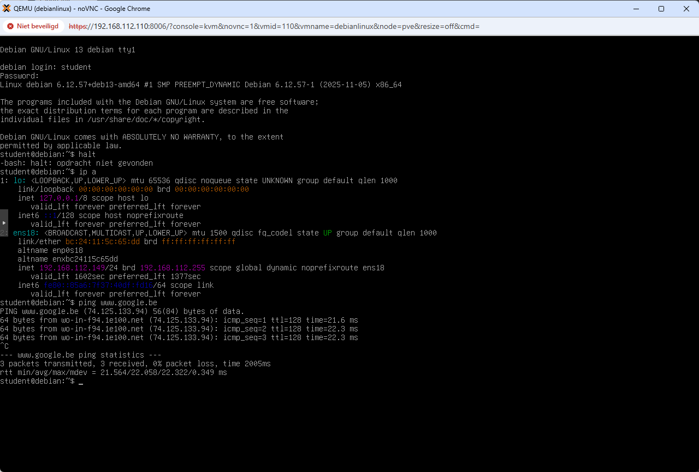
18.3.2 Met nested virtualization: AlmaLinux 10¶
We maken een VM met AlmaLinux 10 aan met volgende instellingen:
-
VM ID: 111
-
Naam: AlmaLinux
-
RAM: 2048 MB (de installer heeft minstens 2 GB nodig)
-
Cores: 2
-
CPU-type: host
-
Disk: 20 GB
-
ISO: AlmaLinux 10 minimal
-
Storage: local-lvm
-
Bridge: vmbr0
AlmaLinux heeft een mirror bij Belnet, in België. Daar download je vlot. We nemen de minimal-ISO: alle pakketten voor een minimale installatie staan erop, dus de installer heeft geen internet nodig. Door -latest- in de naam krijg je altijd de nieuwste versie van AlmaLinux 10.
root@pve:~# cd /var/lib/vz/template/iso/
root@pve:/var/lib/vz/template/iso# wget https://ftp.belnet.be/mirror/almalinux/10/isos/x86_64/AlmaLinux-10-latest-x86_64-minimal.iso
root@pve:/var/lib/vz/template/iso# cd
Maak de VM aan. Met --cpu host krijgt de VM dezelfde processor als pve en benut ze alle mogelijkheden van je laptop. RHEL 10 (AlmaLinux, Rocky Linux, Oracle Linux) heeft dat ook nodig: met het standaardtype x86-64-v2-AES start de installer niet.
root@pve:~# qm create 111 --name AlmaLinux --memory 2048 --cores 2 --cpu host --ostype l26 --net0 virtio,bridge=vmbr0 --agent 1
Voeg een schijf van 20 GB toe en koppel de ISO:
root@pve:~# qm set 111 --scsihw virtio-scsi-single --scsi0 local-lvm:20
root@pve:~# qm set 111 --cdrom local:iso/AlmaLinux-10-latest-x86_64-minimal.iso
Stel de bootvolgorde in: eerst de schijf, dan de ISO. Zolang de schijf leeg is, start de VM van de ISO. Na de installatie start ze vanzelf van de schijf. Je hoeft de bootvolgorde achteraf dus niet meer aan te passen.
root@pve:~# qm set 111 --boot "order=scsi0;ide2"
Stel UEFI in, met het modernere machinetype q35:
root@pve:~# qm set 111 --bios ovmf --machine q35
root@pve:~# qm set 111 --efidisk0 local-lvm:1,efitype=4m
KVM laat je aan: dat is de standaard. Start de VM:
root@pve:~# qm start 111
Ga naar de console via de GUI en kies Install AlmaLinux 10. Kies niet Test this media & install: dan controleert de installer eerst de hele ISO, en dat duurt lang. Kies voor Install AlmaLinux 10.3.
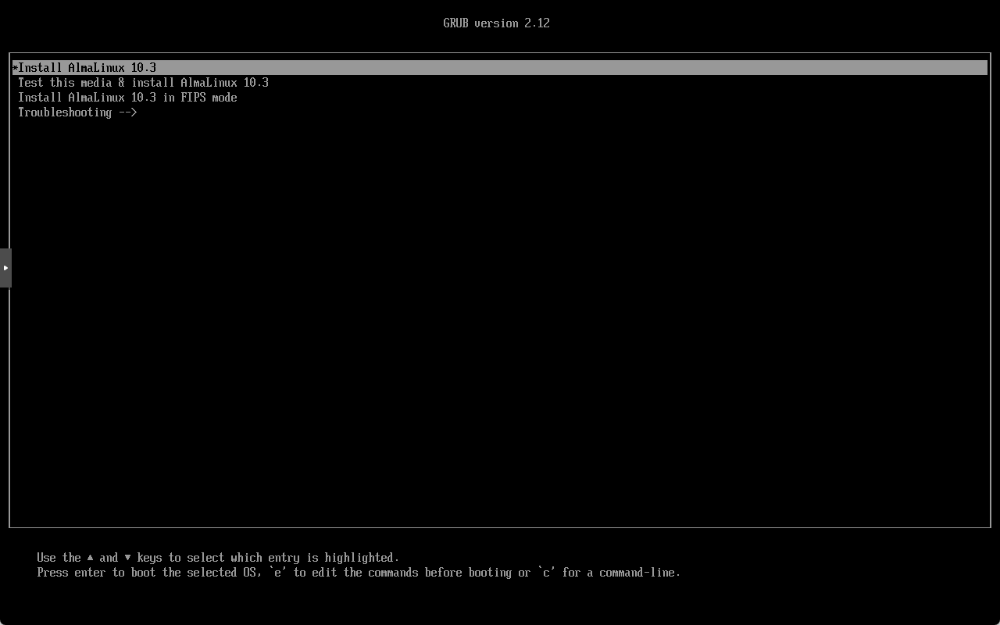
Gebruik daarna deze instellingen:
-
Kies als taal Nederlands (België).
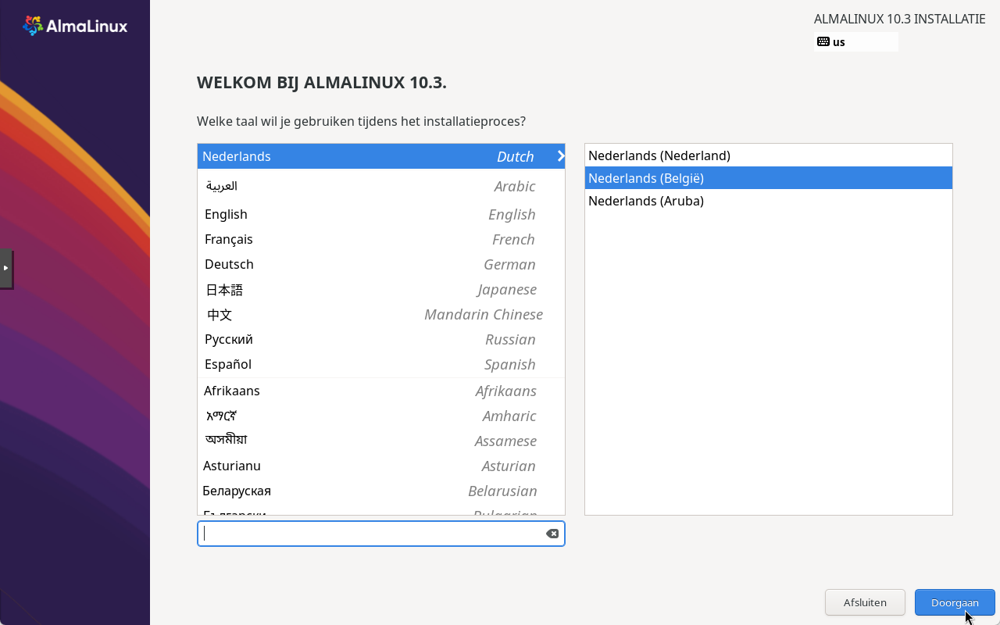
-
Netwerk en hostnaam: Je netwerk staat aan en laat dat zo.
-
Softwareselectie: Minimale installatie staat al aangeduid. Laat dat zo.
-
Installatiebestemming: klik op de schijf en daarna op Gereed. De automatische indeling is goed.
-
Root-account: schakel het root-account in en kies als wachtwoord 123. De installer vindt dat te zwak: klik twee keer op Gereed om het toch te bewaren.
-
Gebruiker aanmaken: maak de gebruiker student aan met wachtwoord 123 en vink Deze gebruiker beheerder maken aan (lid maken van groep wheel).
-
Klik op Installatie beginnen en daarna op Systeem herstarten.
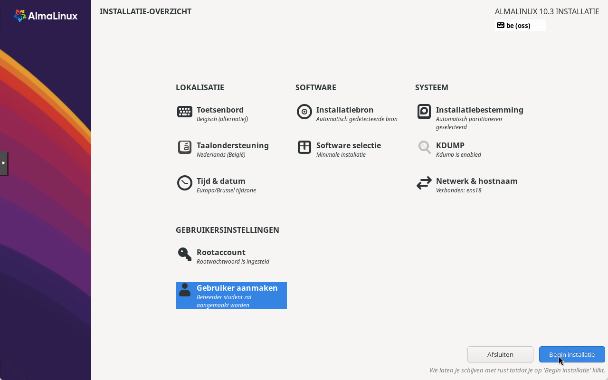
Na de herstart start de VM van de schijf. Log in als student. Je hebt verbinding met het internet.
Verderop in dit hoofdstuk staan de voorbeelden met de Debian-VM 110. Gebruik je AlmaLinux, vervang dan 110 door 111 in de opdrachten.
18.4 Installatie container¶
Zoals je weet gebruiken LXC-containers templates. Deze hebben meestal de extensie .tar.gz. Controleer eerst de beschikbare templates.
root@pve:~# pveam available
…
Je krijgt nu alle beschikbare templates.
Je kan de aanwezige templates ook updaten.
root@pve:~# pveam update
update successful
We zullen zoeken naar containers van Rocky Linux.
root@pve:~# pveam available | grep rocky
system rockylinux-10-default_20251001_amd64.tar.xz
system rockylinux-9-default_20240912_amd64.tar.xz
We downloaden nu de template van Rocky Linux 10 naar local (de standaardlocatie).
root@pve:~# pveam download local rockylinux-10-default_20251001_amd64.tar.xz
We kijken na of de template aanwezig is.
root@pve:~# pveam list local
NAME SIZE
local:vztmpl/rockylinux-10-default_20251001_amd64.tar.xz 80.17MB
We maken nu een container aan de hand van dit LXC-template.
root@pve:~# pct create 200 local:vztmpl/rockylinux-10-default_20251001_amd64.tar.xz -rootfs local-lvm:8 -net0 name=eth0,bridge=vmbr0,ip=dhcp -hostname rockyct -password PXLPXL --unprivileged 1 --features nesting=1--unprivileged 1: root in de container is op Proxmox een gewone gebruiker (UID 100000). Breekt iemand uit de container, dan heeft hij op de host geen rechten. Zonder deze optie maakt pct create een privileged container, waarin root ook op de host root is.
--features nesting=1: laat de container zelf weer kleine afgeschermde ruimtes maken in zijn eigen ruimte. Rocky Linux 10 heeft dat nodig om goed te werken, en Podman ook. Het geeft de container wat meer vrijheid. Zet het daarom altijd samen met --unprivileged 1.
We starten nu de container.
root@pve:~# pct start 200
We loggen nu in op de container.
root@pve:~# pct console 200
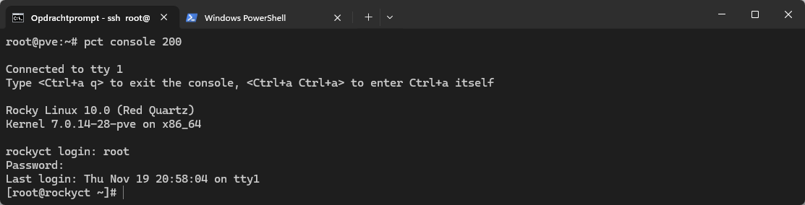
Ben je met pct console 200 in de container gegaan, dan keer je terug naar Proxmox met Ctrl+A en daarna Q. Laat Ctrl+A eerst los voor je op Q drukt. Ben je met pct enter 200 binnengegaan, dan typ je gewoon exit.
18.5 Snapshots, klonen en templates¶
Snapshots en klonen kan je ook in de webinterface maken. Hier doe je het met qm en pct, voor de Debian-VM 110 en de container 200 die je hierboven gemaakt hebt. Werk je met AlmaLinux, gebruik dan 111 in plaats van 110.
18.5.1 Snapshots van een virtuele machine¶
Maak een snapshot van de Debian-VM. Debian staat op de schijf, dus de schijf bewaren volstaat. Met --description geef je er een beschrijving bij.
root@pve:~# qm snapshot 110 voor-update --description "voor apt upgrade"
Log in op de VM, maak een bestand aan en neem dan een tweede snapshot. Met --vmstate 1 bewaar je nu ook het werkgeheugen, net zoals Include RAM in de webinterface.
student@debian:~$ touch na-snapshot
root@pve:~# qm snapshot 110 met-ram --vmstate 1
Vraag de lijst op. Je ziet een boom: elke snapshot bouwt verder op de vorige.
root@pve:~# qm listsnapshot 110
`-> voor-update 2026-11-16 14:02:11 voor apt upgrade
`-> met-ram 2026-11-16 14:10:37 no-description
`-> current You are here!
Zet de VM terug naar de eerste snapshot. Die bevat geen werkgeheugen, dus na de rollback staat de VM uit. Start ze opnieuw en kijk of het bestand weg is.
root@pve:~# qm rollback 110 voor-update
root@pve:~# qm start 110
student@debian:~$ ls na-snapshot
ls: cannot access 'na-snapshot': No such file or directory
Verwijder daarna de snapshots die je niet meer nodig hebt:
root@pve:~# qm delsnapshot 110 met-ram
root@pve:~# qm delsnapshot 110 voor-update
18.5.2 Snapshots van een container¶
Bij een container gebruik je dezelfde opdrachten met pct. Het werkgeheugen kan je niet bewaren. Met pct exec voer je vanaf pve een opdracht uit in de container, zonder in te loggen.
root@pve:~# pct snapshot 200 basis
root@pve:~# pct exec 200 -- touch /root/na-snapshot
root@pve:~# pct exec 200 -- ls /root
na-snapshot
root@pve:~# pct rollback 200 basis
root@pve:~# pct start 200
root@pve:~# pct exec 200 -- ls /root
root@pve:~# pct listsnapshot 200
root@pve:~# pct delsnapshot 200 basis
Proxmox stopt de container zelf voor de rollback. Start hem daarna opnieuw: het bestand is weg.
18.5.3 Klonen en templates¶
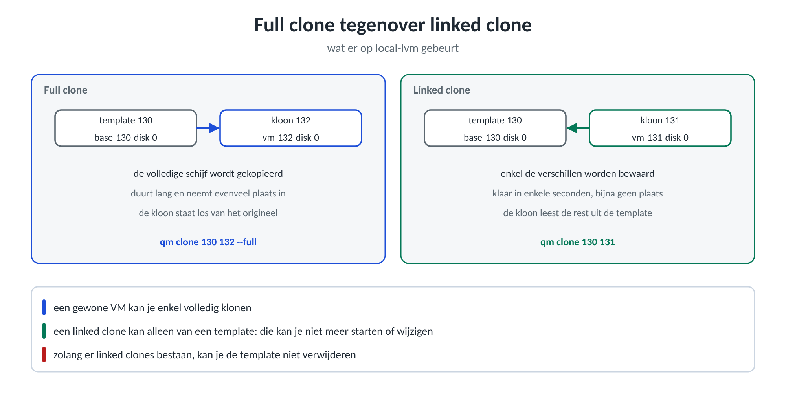
Zet de Debian-VM uit en maak er een volledige kloon van. Die kloon zetten we om naar een template, zodat 110 bruikbaar blijft.
root@pve:~# qm shutdown 110
root@pve:~# qm clone 110 130 --name debian-basis --full
root@pve:~# qm template 130
Kijk wat er met de schijf gebeurd is:
root@pve:~# lvs pve | grep 130
base-130-disk-0 pve Vri---tz-k 15.00g data
De schijf heet nu base-130-disk-0 in plaats van vm-130-disk-0. De r in de kolom Attr betekent dat ze alleen-lezen is: de basis van een template kan niemand nog wijzigen.
Maak nu van de template een linked clone en een volledige kloon. Bij een template is een linked clone de standaard; met --full maak je een volledige kopie.
root@pve:~# qm clone 130 131 --name debian-linked
root@pve:~# qm clone 130 132 --name debian-full --full
Vergelijk de schijven:
root@pve:~# lvs -o lv_name,origin pve | grep -E 'LV|13[012]'
LV Origin
base-130-disk-0
vm-131-disk-0 base-130-disk-0
vm-132-disk-0
De linked clone 131 heeft base-130-disk-0 als Origin: alles wat ze zelf niet gewijzigd heeft, leest ze uit de template. De volledige kloon 132 staat op zichzelf.
Een kloon van een geïnstalleerd systeem heeft dezelfde hostname en hetzelfde machine-id als het origineel. Zet je beide tegelijk aan, dan kunnen ze via DHCP hetzelfde IP-adres krijgen. Pas dat in de kloon aan voor je ze gebruikt, of gebruik cloud-images met cloud-init.
Probeer de template te verwijderen. Proxmox weigert, want de linked clone 131 gebruikt haar schijf nog. Verwijder eerst de klonen:
root@pve:~# qm destroy 130
root@pve:~# qm destroy 131
root@pve:~# qm destroy 132
root@pve:~# qm destroy 130
18.5.4 Containers klonen¶
Ook containers kloon je terwijl ze uit staan. Bij een container past Proxmox de hostname in de kloon zelf aan.
root@pve:~# pct shutdown 200
root@pve:~# pct clone 200 201 --hostname rocky-kloon --full
root@pve:~# pct template 201
root@pve:~# pct clone 201 202 --hostname rocky-linked
root@pve:~# pct start 200
Ruim op: eerst de linked clone, dan de template.
root@pve:~# pct destroy 202
root@pve:~# pct destroy 201
18.5.5 Overzicht¶
-
qm snapshot / pct snapshot <id> <naam>: een snapshot nemen; met --vmstate 1 ook het werkgeheugen (enkel qm);
-
qm listsnapshot / pct listsnapshot <id>: de snapshots tonen;
-
qm rollback / pct rollback <id> <naam>: terug naar een snapshot;
-
qm delsnapshot / pct delsnapshot <id> <naam>: een snapshot verwijderen;
-
qm clone / pct clone <id> <nieuw-id>: een kloon maken; met --full een volledige kopie;
-
qm template / pct template <id>: een machine omzetten naar een template.
18.6 Een bestaande machine importeren¶
Je hebt al virtuele machines staan in VMware Workstation. Die hoef je niet opnieuw te installeren: je kan hun schijf rechtstreeks in Proxmox inlezen. Dat heet V2V, van virtueel naar virtueel.
18.6.1 De schijf naar Proxmox kopiëren¶
Sluit de machine in VMware netjes af en zoek de map met haar bestanden. Daar staat een bestand met de extensie .vmdk: dat is de schijf. Kopieer het naar je Proxmox-server, bijvoorbeeld met scp vanaf je Windows-machine:
C:\Users\stijn> scp Debian.vmdk root@192.168.112.144:/var/lib/vz/dump/
18.6.2 Een lege machine aanmaken¶
Maak eerst een virtuele machine zonder schijf. De instellingen moeten passen bij wat de gast verwacht:
root@pve:~# qm create 120 --name ImportTest --memory 2048 --cores 2 --net0 virtio,bridge=vmbr0
18.6.3 De schijf inlezen¶
root@pve:~# qm importdisk 120 /var/lib/vz/dump/Debian.vmdk local-lvm
Proxmox zet de schijf om naar zijn eigen formaat en hangt ze aan de machine als unused0. Je moet ze nog koppelen en als opstartschijf aanduiden:
root@pve:~# qm set 120 --scsihw virtio-scsi-pci --scsi0 local-lvm:vm-120-disk-0
root@pve:~# qm set 120 --boot order=scsi0
root@pve:~# qm start 120
Hoort er een OVF-bestand bij de machine, dan gaat het in een enkele stap. Proxmox leest daar ook het geheugen, het aantal kernen en de netwerkkaart uit:
root@pve:~# qm importovf 120 /var/lib/vz/dump/Debian.ovf local-lvm
18.6.4 Waarop letten¶
-
verwijder in de gast de VMware Tools en installeer qemu-guest-agent in de plaats;
-
de netwerkkaart krijgt een andere naam en een nieuw MAC-adres. Een vaste netwerkconfiguratie op de oude naam werkt dan niet meer;
-
schijven van Windows-machines missen vaak de virtio-stuurprogramma's. Zet de schijf dan eerst op SATA, installeer de stuurprogramma's in de gast, en schakel daarna pas om naar virtio.
18.7 Netwerken¶
18.7.1 Inleiding¶
Proxmox geeft je meerdere netwerkopties, afhankelijk van wat je wilt bereiken. We bespreken een Linux Bridge, NAT-bridge en Linux Bond. We testen alles uit op PVE.
18.7.2 Back-up netwerkconfiguratie¶
Maak vooraf best een back-up van /etc/network/interfaces.
root@pve:~# cp /etc/network/interfaces interfaces~
18.7.3 NAT-bridge¶
18.7.3.1 NAT-bridge aanmaken via CLI¶
Open /etc/network/interfaces:
root@pve:~# nano /etc/network/interfaces
Voeg dit onderaan toe:
auto vmbr1
iface vmbr1 inet static
address 192.168.100.1/24
bridge_ports none
bridge_stp off
bridge_fd 0
# NAT via vmbr0 (hoofd-bridge)
post-up iptables -t nat -A POSTROUTING -s 192.168.100.0/24 -o vmbr0 -j MASQUERADE
post-down iptables -t nat -D POSTROUTING -s 192.168.100.0/24 -o vmbr0 -j MASQUERADE
Pas vmbr0 aan als jouw internet-bridge anders heet.
Netwerk herstarten:
root@pve:~# systemctl restart networking
18.7.3.2 DHCP-server via CLI¶
We installeren dnsmasq voor DHCP en DNS.
root@pve:~# apt install dnsmasq
Nieuwe config maken.
root@pve:~# nano /etc/dnsmasq.d/vmbr1.conf
interface=vmbr1
dhcp-range=192.168.100.100,192.168.100.200,12h
(Her)start nu dnsmasq.
root@pve:~# systemctl restart dnsmasq
18.7.3.3 VM netwerkadapter via CLI koppelen¶
Je kan voor een bestaande VM de instellingen van de NIC wijzigen.
root@pve:~# qm set 200 -net0 virtio,bridge=vmbr1
Je kan voor een bestaande CT de instellingen van de NIC wijzigen.
root@pve:~# pct set 200 -net0 name=eth0,bridge=vmbr1,ip=dhcp
Start VM of container en test IP en of je verbinding hebt met internet.
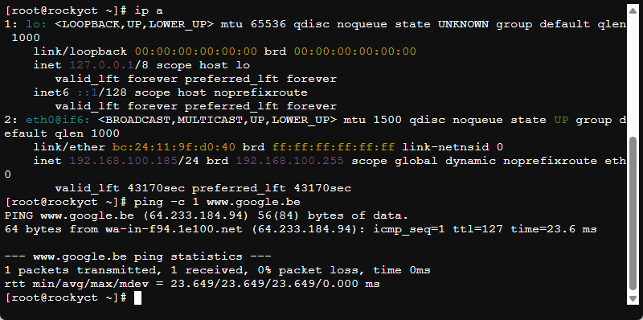
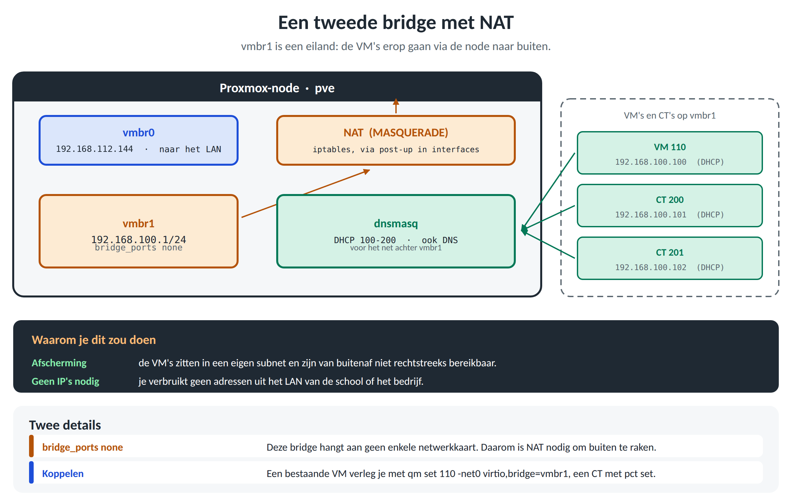
18.7.4 Bonding¶
18.7.4.1 Inleiding¶
Bonding betekent dat je twee fysieke netwerkkaarten samenvoegt tot één logische interface voor high availability (en eventueel meer bandbreedte).
Zo ziet dat er conceptueel uit:
ens33 ┐
ens37 ┘ → bond0 → vmbr0 → LAN/switch
De belangrijkste bond-modes:
-
active-backup (mode 1)
Slechts één NIC tegelijk actief; valt die uit, neemt de andere het naadloos over.
Ideaal voor redundantie; werkt ook op eenvoudige switches zonder LACP. -
802.3ad / LACP (mode 4)
Beide NIC’s actief; biedt én redundantie én load‑balancing.
Vereist dat de switchpoorten in een LACP-trunk staan.‑
Wij implementeren active-backup.
18.7.4.2 Netwerkkaart toevoegen¶
Voor bonding heb je een tweede netwerkkaart nodig.
Voeg aan de VM PVE een tweede netwerkkaart toe die met NAT verbonden is zoals hieronder staat weergegeven.
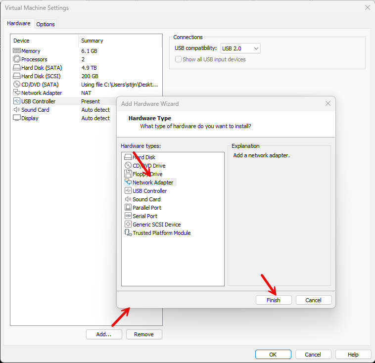
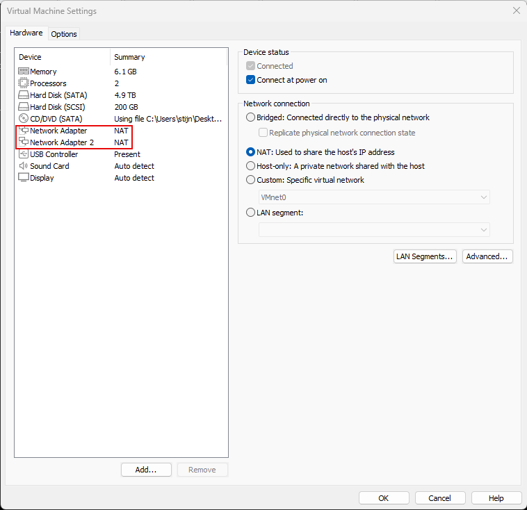
18.7.4.3 Configuratie¶
Bekijk nu eerst de toegewezen naam van de nieuwe netwerkkaart op je systeem.
root@pve:~# ip a
…
2: ens33: <BROADCAST,MULTICAST,UP,LOWER_UP> mtu 1500 qdisc fq_codel master vmbr0 state UP group default qlen 1000
link/ether 00:0c:29:c1:bb:43 brd ff:ff:ff:ff:ff:ff
altname enp2s1
altname enx000c29c1bb43
…
177: ens37: <BROADCAST,MULTICAST> mtu 1500 qdisc noop state DOWN group default qlen 1000
link/ether 00:0c:29:c1:bb:4d brd ff:ff:ff:ff:ff:ff
altname enp2s5
altname enx000c29c1bb4d
Zoals je ziet is er hier een tweede netwerkkaart toegevoegd. De status is down. Logisch aangezien de netwerkkaart nog niet geconfigureerd is in /etc/network/interfaces.
We stellen nu bond in voor ens33 en ens37 in /etc/network/interfaces.
root@pve:~# nano /etc/network/interfaces
# Loopback
auto lo
iface lo inet loopback
# Bond0: active-backup van twee NICs in hetzelfde NAT-subnet
auto bond0
iface bond0 inet manual
bond-slaves ens33 ens37
bond-mode active-backup
bond-miimon 100
# LAN bridge via bond0
auto vmbr0
iface vmbr0 inet static
address 192.168.112.144/24
gateway 192.168.112.2
bridge_ports bond0
bridge_stp off
bridge_fd 0
Herstart nu de netwerkinterfaces.
root@pve:~# ifreload -a
Controle interfaces.
root@pve:~# ip a
2: ens33: <BROADCAST,MULTICAST,SLAVE,UP,LOWER_UP> mtu 1500 qdisc fq_codel master bond0 state UP group default qlen 1000
link/ether 00:0c:29:c1:bb:43 brd ff:ff:ff:ff:ff:ff
altname enp2s1
altname enx000c29c1bb43
172: vmbr0: <BROADCAST,MULTICAST,UP,LOWER_UP> mtu 1500 qdisc noqueue state UP group default qlen 1000
link/ether 00:0c:29:c1:bb:43 brd ff:ff:ff:ff:ff:ff
inet 192.168.112.144/24 scope global vmbr0
valid_lft forever preferred_lft forever
inet6 fe80::20c:29ff:fec1:bb43/64 scope link proto kernel_ll
valid_lft forever preferred_lft forever
177: ens37: <BROADCAST,MULTICAST,SLAVE,UP,LOWER_UP> mtu 1500 qdisc fq_codel master bond0 state UP group default qlen 1000
link/ether 00:0c:29:c1:bb:43 brd ff:ff:ff:ff:ff:ff permaddr 00:0c:29:c1:bb:4d
altname enp2s5
altname enx000c29c1bb4d
178: bond0: <BROADCAST,MULTICAST,MASTER,UP,LOWER_UP> mtu 1500 qdisc noqueue master vmbr0 state UP group default qlen 1000
link/ether 00:0c:29:c1:bb:43 brd ff:ff:ff:ff:ff:ff
Je ziet:
-
ens33 en ens37 zijn slave van bond0.
-
bond0 is master van vmbr0
-
vmbr0 heeft IP 192.168.112.144/24
-
Alle interfaces zijn UP / LOWER_UP
We checken de bond status.
root@pve:~# cat /proc/net/bonding/bond0
…
Currently Active Slave: ens33
…
We testen connectie met NAT-gateway en met internet
root@pve:~# ping -c 1 192.168.112.2
PING 192.168.112.2 (192.168.112.2) 56(84) bytes of data.
64 bytes from 192.168.112.2: icmp_seq=1 ttl=128 time=0.107 ms
--- 192.168.112.2 ping statistics ---
1 packets transmitted, 1 received, 0% packet loss, time 0ms
rtt min/avg/max/mdev = 0.107/0.107/0.107/0.000 ms
root@pve:~# ping -c 1 www.google.be
PING www.google.be (64.233.184.94) 56(84) bytes of data.
64 bytes from wa-in-f94.1e100.net (64.233.184.94): icmp_seq=1 ttl=128 time=24.6 ms
--- www.google.be ping statistics ---
1 packets transmitted, 1 received, 0% packet loss, time 0ms
rtt min/avg/max/mdev = 24.576/24.576/24.576/0.000 ms
We testen nu de failover. We disconnecteren ens33.
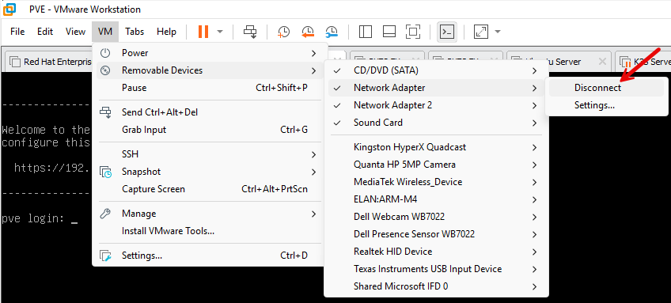
We checken terug de bond status.
root@pve:~# cat /proc/net/bonding/bond0
…
Currently Active Slave: ens37
…
Dat is correct .
We testen terug connectie met NAT-gateway en met internet
root@pve:~# ping -c 1 192.168.112.2
PING 192.168.112.2 (192.168.112.2) 56(84) bytes of data.
64 bytes from 192.168.112.2: icmp_seq=1 ttl=128 time=0.104 ms
--- 192.168.112.2 ping statistics ---
1 packets transmitted, 1 received, 0% packet loss, time 0ms
rtt min/avg/max/mdev = 0.104/0.104/0.104/0.000 ms
root@pve:~# ping -c 1 www.google.be
PING www.google.be (64.233.184.94) 56(84) bytes of data.
64 bytes from wa-in-f94.1e100.net (64.233.184.94): icmp_seq=1 ttl=128 time=22.4 ms
--- www.google.be ping statistics ---
1 packets transmitted, 1 received, 0% packet loss, time 0ms
rtt min/avg/max/mdev = 22.351/22.351/22.351/0.000 ms
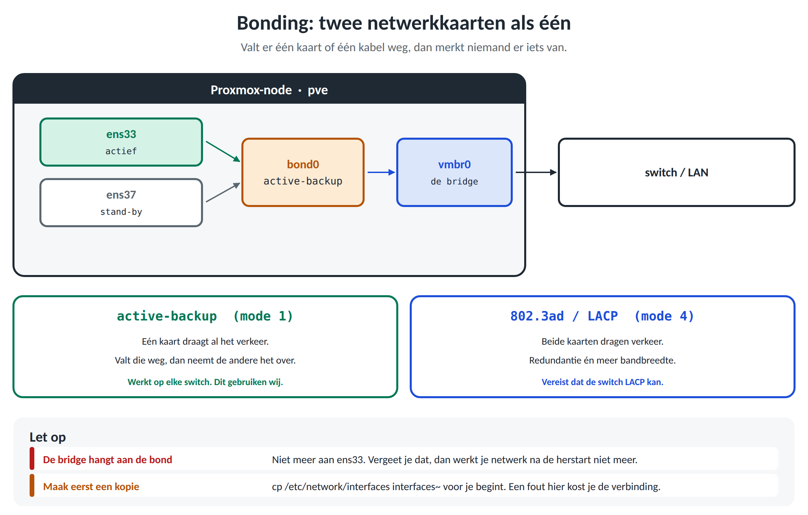
18.7.5 Restore netwerkconfiguratie¶
Verwijder Netwerk Adapter 2 van PVE.
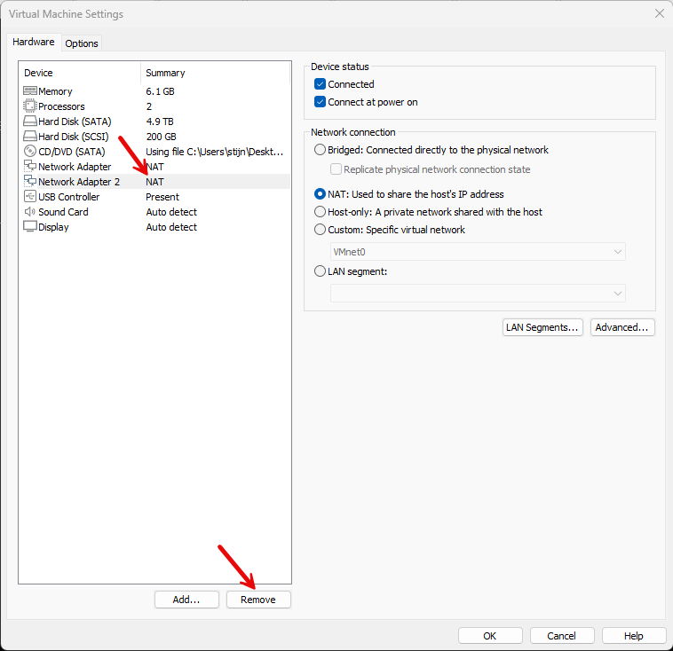
Zet de eerste netwerkadapter ook aan.
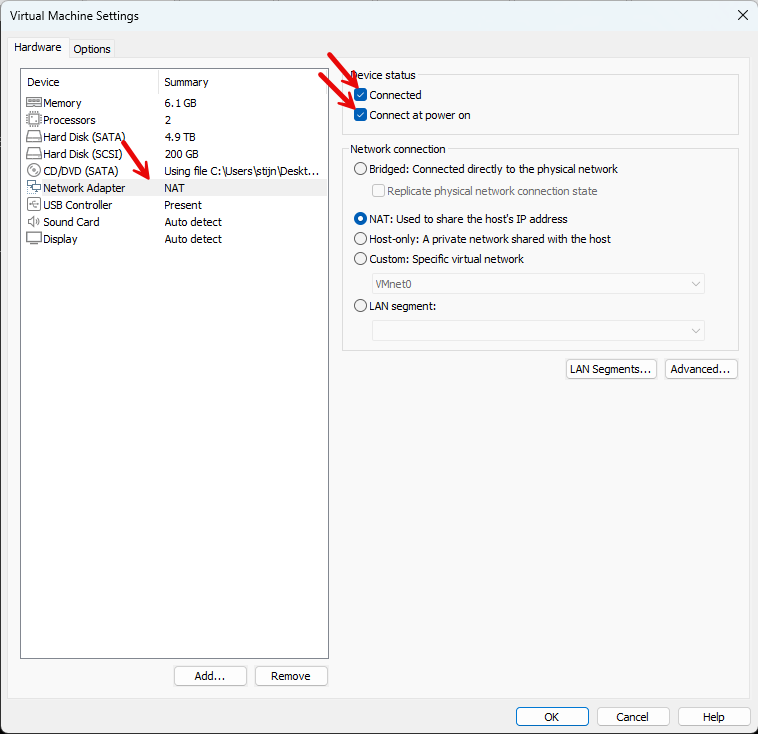
Zet je back-up van /etc/network/interfaces terug.
root@pve:~# cp interfaces~ /etc/network/interfaces
root@pve:~# reboot